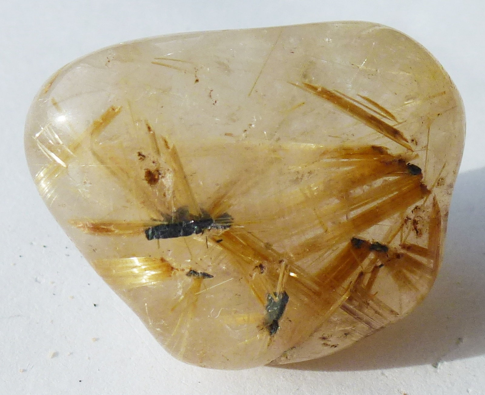
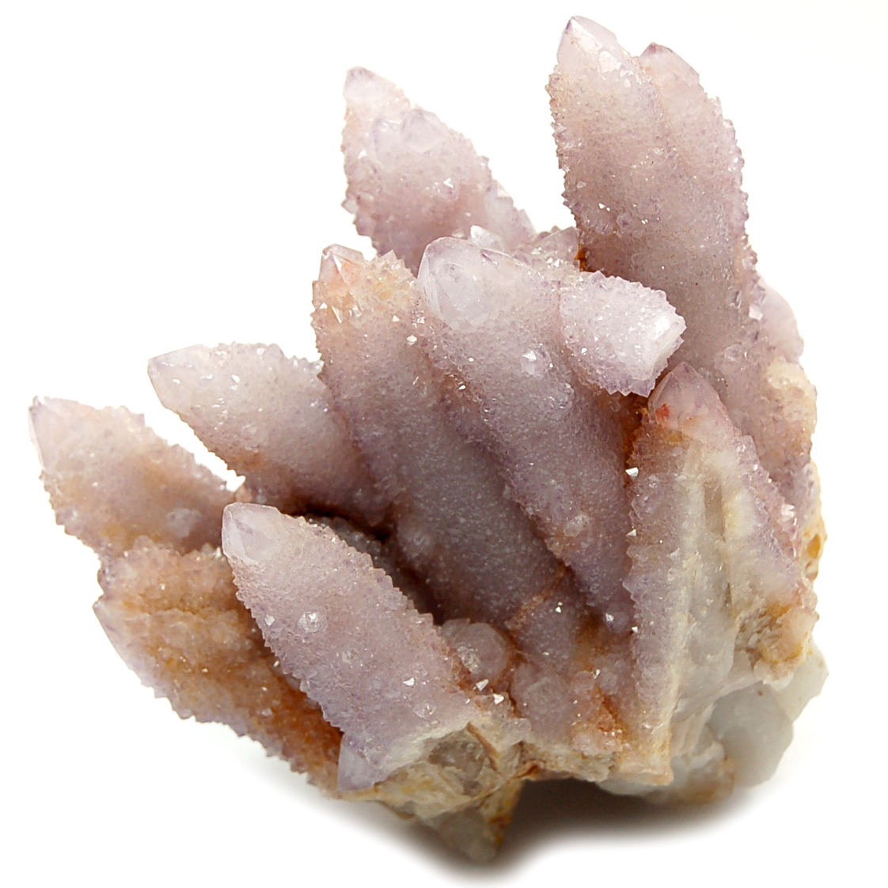

Quartz: The Most Abundant and Versatile Gemstone

Chemical Formula: SiO₂ (Silicon Dioxide)
Color: Various (Clear, Purple, Yellow, Pink, Brown, etc.)
Hardness: 7 on the Mohs scale
Crystal System: Trigonal
Localities: Brazil, United States, Madagascar, South Africa
Common Uses: Jewelry, Decorative Items, Carvings, Industrial Applications
Quartz is one of the most abundant and versatile minerals on Earth, prized for its wide range of colors, forms, and uses. Composed of silicon dioxide (SiO₂), quartz is a key component of many types of rocks, including granite and sandstone. Its crystalline structure can form in a variety of shapes and sizes, from small microscopic crystals to large transparent gems. Quartz has been used by humans for thousands of years, both as a gemstone and for its practical applications in tools and technology.
The name "quartz" is derived from the German word "quarz," which has Slavic origins meaning "hard." Quartz is found all over the world and is cherished not only for its beauty but also for its durability and wide range of colors. From clear rock crystal to vibrant amethyst, smoky quartz, and rose quartz, this gemstone is incredibly diverse, making it a favorite among collectors, jewelers, and metaphysical practitioners.
Formation and Types of Quartz
Quartz forms through the crystallization of silica-rich fluids in a variety of geological environments. It can form in igneous, metamorphic, and sedimentary rocks, often filling fractures or cavities within these rocks. The specific conditions under which quartz forms, such as temperature, pressure, and the presence of other minerals, contribute to the wide variety of quartz types and colors.
There are several major types of quartz, each with its own distinct characteristics:
Rock Crystal (Clear Quartz)
Rock crystal is the purest form of quartz, colorless and transparent. It is often used in jewelry and for metaphysical purposes, believed to amplify energy and promote clarity.
Amethyst

Amethyst is a violet or purple variety of quartz, colored by trace amounts of iron and natural irradiation. It is one of the most popular gemstones and has been prized for centuries for its rich color and spiritual significance.
Citrine

Citrine is a yellow-to-orange variety of quartz, also colored by iron impurities. It is often used in jewelry and is associated with prosperity and success.
Rose Quartz

Rose quartz is a pink variety of quartz, colored by trace amounts of titanium, iron, or manganese. It is commonly used in jewelry and is believed to promote love and emotional healing.
Smoky Quartz

Smoky quartz is a brown to black variety of quartz, colored by natural irradiation. It is often used in jewelry and is associated with grounding and protection.
Milky Quartz
Milky quartz is an opaque white variety of quartz, often found in massive formations. It is commonly used in carvings and decorative objects.
Rutilated Quartz
Rutilated quartz contains needle-like inclusions of rutile (a titanium dioxide mineral), which create striking patterns within the stone. It is highly prized for its unique appearance and metaphysical properties.
Structure and Properties of Quartz
Quartz belongs to the trigonal crystal system and is composed of silicon dioxide (SiO₂). It is known for its hardness and durability, as well as its wide range of colors and forms.
- Hardness: Quartz has a hardness of 7 on the Mohs scale, making it relatively hard and resistant to scratches. This durability makes it suitable for a wide range of applications, from jewelry to industrial uses.
- Color: Quartz comes in a wide range of colors, including clear, white, pink, purple, yellow, brown, and black. The color of quartz is often determined by trace elements or inclusions within the crystal structure.
- Luster: Quartz exhibits a vitreous (glassy) luster when polished, giving it a bright, reflective surface. This luster enhances the stone's natural beauty, making it a popular choice for jewelry and decorative items.
- Transparency: Quartz can range from transparent to opaque, depending on its form and the presence of inclusions. Clear quartz is fully transparent, while varieties like milky quartz are opaque.
Uses of Quartz
Quartz has been used for various purposes throughout history, from practical applications to decorative arts:
Jewelry
Quartz is one of the most popular gemstones for jewelry, used in everything from rings and necklaces to earrings and bracelets. Its wide range of colors and affordability make it a favorite for both fine and costume jewelry. Amethyst, citrine, rose quartz, and smoky quartz are particularly popular for their vibrant colors and metaphysical properties.
Industrial Applications
Quartz is used extensively in the industrial sector due to its hardness and chemical stability. It is a key component in the production of glass, ceramics, and cement and is also used in the manufacture of electronic components such as oscillators and filters.
Decorative Items
Quartz is commonly used in carvings, sculptures, and other decorative objects. Large quartz crystals are often displayed as natural specimens, while polished quartz is used in inlays, vases, and ornamental pieces.
Metaphysical Uses
Quartz is highly valued in the metaphysical community for its purported healing properties. Clear quartz is believed to be a powerful energy amplifier, while other varieties, such as rose quartz and amethyst, are associated with love, protection, and spiritual growth.
Timekeeping
Quartz crystals are used in watches and clocks due to their ability to generate a precise frequency when subjected to mechanical stress. This property makes quartz an essential component in timekeeping devices.
History of Quartz
The history of quartz spans several millennia, with the gemstone playing a significant role in various cultures:
- Ancient Egypt: Quartz was used extensively in ancient Egypt, particularly clear quartz and rose quartz. It was often carved into amulets, jewelry, and talismans, believed to possess protective and healing properties.
- Ancient Greece and Rome: The ancient Greeks and Romans also valued quartz, particularly amethyst and rock crystal. Amethyst was believed to protect against intoxication, while rock crystal was thought to be a form of eternal ice.
- Medieval Europe: During the Middle Ages, quartz was used in religious and ceremonial objects. Clear quartz was often used as a substitute for glass in windows and as a material for crystal balls, believed to aid in divination.
- Modern Times: Today, quartz continues to be one of the most popular and widely used gemstones. Its versatility and beauty make it a staple in jewelry, decorative arts, and industrial applications.
Unusual Varieties of Quartz
In addition to the well-known varieties of quartz, there are several unusual and rare forms:
Ametrine

Ametrine is a unique variety of quartz that displays both amethyst and citrine colors within the same crystal. This bi-colored gemstone is highly prized for its striking appearance and is primarily found in Bolivia.
Prasiolite
Also known as green quartz or vermarine, prasiolite is a rare green variety of quartz. It is usually produced by heat-treating amethyst or yellow quartz, although natural prasiolite is also found in small quantities.
Blue Quartz
Blue quartz is a rare variety that gets its color from inclusions of other minerals, such as dumortierite. It is often used in decorative objects and is valued for its soothing color.
Spirit Quartz
Spirit quartz, also known as cactus quartz, is a form of quartz that has a central crystal covered with smaller druzy crystals. It is typically found in South Africa and is highly prized for its unique appearance.
Phantom Quartz
Phantom quartz contains ghost-like inclusions of earlier stages of crystal growth within the main crystal. These inclusions create the appearance of a "phantom" crystal within the quartz and are often associated with spiritual growth and transformation.
Enhancement of Quartz
To enhance its appearance and durability, quartz may undergo various treatments:
- Heat Treatment: Amethyst and citrine are often heat-treated to enhance their color. For example, some citrine is produced by heating amethyst, which changes its color from purple to yellow or orange. This treatment is stable and widely accepted in the industry.
- Irradiation: Some quartz varieties, such as smoky quartz, may be irradiated to enhance or create their color. This treatment is also stable and is typically disclosed to buyers.
- Dyeing: Quartz can be dyed to produce vibrant colors that are not found in nature. This treatment is often used for quartz beads and cabochons and should be disclosed as dyed quartz is less valuable than natural quartz.
- Coating: Some quartz is coated with a thin layer of material, such as titanium, to create a rainbow or metallic effect. This treatment is common in decorative quartz and is often marketed as "aura quartz."
Famous Finds and Quartz
Quartz has been discovered in various parts of the world, with some famous finds being particularly notable:
Brazilian Amethyst
Brazil is one of the largest producers of amethyst, known for its deep purple color and large crystal formations. The country has produced some of the most famous and valuable amethyst specimens in the world.
Herkimer Diamonds

Herkimer quartz crystals, also known as Herkimer diamonds, are double-terminated quartz crystals found in Herkimer County, New York. These crystals are prized for their clarity and natural faceting, resembling diamonds.
Arkansas Quartz
Arkansas is home to some of the largest and most well-formed quartz crystals in the world. The state's Ouachita Mountains are a major source of clear quartz, often used in jewelry and for metaphysical purposes.
Thunder Bay Amethyst

Thunder Bay in Ontario, Canada, is known for producing amethyst with a distinctive red-tinged color. These crystals are highly prized for their unique color and are often used in jewelry and decorative objects.
Sourcing Locations and Mining
Quartz is sourced from several key locations around the world, each known for producing stones with distinct characteristics:
- Brazil: Brazil is one of the largest producers of quartz, particularly amethyst, citrine, and rock crystal. The country's Minas Gerais region is famous for its large and high-quality quartz crystals.
- Madagascar: Madagascar is a significant source of rose quartz, with the country's mines producing large quantities of this pink gemstone. Madagascar is also known for its unique quartz varieties, such as star quartz.
- South Africa: South Africa is the primary source of spirit quartz, a unique variety with a druzy surface. The country is also known for producing large quantities of clear and smoky quartz.
- United States: The United States, particularly Arkansas and Arizona, is a major source of quartz. Arkansas is known for its clear quartz crystals, while Arizona produces high-quality amethyst. Use our gemstone and crystals map to locate different quartz locations across the United States.
Where to Find Opal in the United State
The United States, particularly Arkansas and Arizona, is a major source of quartz. Arkansas is known for its clear quartz crystals, while Arizona produces high-quality amethyst. Use our gemstone and crystals map to locate different quartz locations across the United States.
Exploration and Mining
The exploration and mining of quartz involve locating suitable deposits and extracting the stone with care:
Exploration
Geological surveys and sampling are conducted to locate quartz deposits, typically in areas with igneous or metamorphic rocks. Traditional prospecting methods, such as surface exploration and test drilling, are used to identify potential mining sites.
Mining Methods
Quartz is typically mined using open-pit or underground mining techniques, depending on the depth of the deposit. Large quartz crystals are often extracted by hand to prevent damage, while smaller crystals may be mined using mechanized methods.
Processing
After extraction, quartz is cleaned, sorted, and graded based on its color, clarity, and overall quality. The stone is then cut and polished for use in jewelry, decorative items, or industrial applications.
Identifying Authentic Quartz
Identifying an authentic quartz involves examining several key characteristics:
- Color: Quartz comes in a wide range of colors, from clear to vibrant shades of purple, yellow, pink, and brown. The color should be even and natural-looking, with no signs of dye or artificial enhancement.
- Clarity: High-quality quartz is typically eye-clean, meaning it has no visible inclusions to the naked eye. Stones with visible inclusions or a cloudy appearance are less valuable, although some inclusions, like rutile needles, can add to the stone's appeal.
- Testing Methods: Common tests for authenticity include checking the stone's refractive index (1.54 to 1.55) and examining it under a loupe to identify any characteristic inclusions. Quartz should have a natural, consistent color and luster.
- Certification: High-quality quartz, particularly rare varieties like ametrine or large amethyst crystals, may come with a certificate of authenticity from a reputable gemological laboratory. This certification provides detailed information about the stone's characteristics and any treatments.
Buy & Sell Authentic Quartz Here
Cutting and Polishing Quartz
Cutting and polishing quartz is a skilled process that enhances the stone's natural beauty:
- The Cutting Process: Quartz is typically cut into faceted shapes, such as round, oval, or cushion, to maximize its brilliance and color. The cutter must carefully plan the cut to avoid inclusions and enhance the stone's natural sparkle.
- Polishing: After cutting, quartz is polished to a high gloss using fine abrasives. The polishing process enhances the stone's luster and clarity, giving it a smooth, reflective surface.
- Carving: Due to its hardness, quartz is also used for carving intricate designs, such as figurines, small sculptures, and ornamental objects. Skilled artisans can create detailed carvings that highlight the stone's unique color and clarity.
Quartz Market and Trade
The market for quartz is influenced by several factors, including quality, origin, and demand:
- Value Determinants: The value of quartz is determined by its color, clarity, and overall quality. Stones with vibrant colors, high clarity, and unique inclusions, such as rutile needles, are the most valuable.
- Global Trade: Brazil, the United States, and Madagascar are the leading producers of quartz. The global trade of quartz is driven by demand from jewelers, collectors, and enthusiasts who value the stone for its unique beauty and versatility.
- Market Trends: Quartz continues to be popular in jewelry and decorative arts. The demand for ethically sourced quartz is increasing, particularly as consumers become more aware of the conditions in which the gemstone is mined. Rare varieties, such as ametrine and rutilated quartz, are especially sought after in the global market.
Buy & Sell Authentic Quartz Here
Caring for Quartz
Quartz requires proper care to maintain its beauty and prevent damage:
- Cleaning: Clean quartz with warm, soapy water and a soft cloth. Avoid ultrasonic cleaners and harsh chemicals, as these can damage the stone's surface or cause it to crack. Quartz should not be exposed to extreme temperatures or acids.
- Storage: Store quartz separately from harder gemstones to prevent scratches. Keep it in a soft pouch or lined jewelry box to protect it from dust and abrasion.
- Handling: Quartz is relatively hard and durable, but it can still be prone to chipping and cracking. Handle it with care, especially when wearing or cleaning jewelry. Avoid exposing quartz to direct sunlight for prolonged periods, as this can cause the color to fade.
- Repolishing: Over time, quartz may lose its luster due to wear and tear. Professional repolishing can restore the stone's shine and enhance its appearance.
Metaphysical Properties of Quartz
Quartz has been attributed with various metaphysical properties throughout history:
- Amplification and Energy: Clear quartz is often considered a powerful amplifier of energy. It is believed to enhance the effects of other crystals and promote clarity of thought, concentration, and overall well-being.
- Healing and Protection: Quartz is said to have healing properties, particularly in balancing the body's energy. It is believed to protect against negative energies and to promote emotional and physical healing.
- Spiritual Growth: Quartz is often used in meditation and spiritual practices. It is said to help the wearer connect with their higher self, access spiritual insight, and deepen their understanding of the universe.
- Chakra Alignment: Different types of quartz are associated with different chakras. For example, rose quartz is linked to the heart chakra, promoting love and emotional healing, while amethyst is associated with the crown chakra, enhancing spiritual awareness.
See Also
Related Crystals and Gemstones: Amethyst, Citrine, Rose Quartz
Relevant Topics: The Diverse World of Quartz Gemstones: An In-Depth Exploration